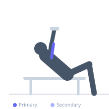
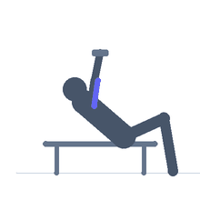

Exercise guide / Incline Dumbbell Tricep Kickback
Incline Dumbbell Tricep Kickback
The incline dumbbell kickback is performed face-down on an incline bench, with the chest resting on the pad and the arms hanging. The incline position allows gravity to fully load the tricep in the extended (kickback) position — where standard kickbacks rely on a horizontal upper arm for resistance. By using an incline, the peak contraction in the extended position is better maintained. The prone position also eliminates any torso rocking.
Primary muscles
triceps lateral head
triceps medial head
Secondary muscles
triceps long head
Equipment
Dumbbell (Fixed)
Adjustable Bench (Incline / Decline)


Starting position
- Set an incline bench to 30-45 degrees. Lie face-down with the chest on the pad. Hold a dumbbell in each hand, arms hanging down.
Setup
- Use light dumbbells — the incline kickback is a strict isolation movement with limited leverage.
Steps
- Step 1: Begin with the arms hanging down, upper arms at the sides of the body.
- Step 2: Extend the elbows rearward, kicking the dumbbells back behind the body.
- Step 3: Hold at full extension for one second, squeezing the triceps.
- Step 4: Return the dumbbells to the hanging position with control.
Coaching cues
- Upper arms pinned to sides
- Kick back and squeeze hard
- Return with control
Breathing
- Exhale on the kickback, inhale on the return.
Range of motion
- Full extension at the top — pause and squeeze.
Tempo
- 1-2-2-0 (2s hold at top)
Common mistakes
- Swinging the dumbbells using shoulder movement
- Not fully extending the elbows at the peak
- Using too heavy a weight
Safety
- The prone position limits cheating — keep the chest on the bench
Training
- hypertrophy: 12–20 reps
- hypertrophy: 3–4 sets
- Rest: {'hypertrophy': 60}